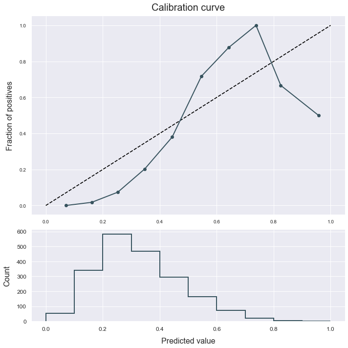

Calibration
This example shows us how to use the calibration method to calibrate a classifier.
The data used is a variation on the Australian weather dataset from https://www.kaggle.com/jsphyg/weather-dataset-rattle-package. The goal of this dataset is to predict whether or not it will rain tomorrow training a binay classifier on target RainTomorrow.
Load the data
# Import packages
import pandas as pd
from atom import ATOMClassifier
# Get the dataset's features and targets
X = pd.read_csv('./datasets/weatherAUS.csv')
# Let's have a look at a subset of the data
X.sample(frac=1).iloc[:5, :8]
| Location | MinTemp | MaxTemp | Rainfall | Evaporation | Sunshine | WindGustDir | WindGustSpeed | |
|---|---|---|---|---|---|---|---|---|
| 99450 | MountGambier | 11.3 | 23.1 | 0.0 | 7.0 | 12.8 | S | 50.0 |
| 103753 | Woomera | 16.0 | 28.9 | 0.0 | 10.4 | 8.2 | ESE | 44.0 |
| 120513 | Perth | 14.7 | 17.8 | 8.6 | 2.0 | 5.3 | SW | 43.0 |
| 47178 | Canberra | 13.2 | 18.7 | 0.0 | NaN | NaN | E | 31.0 |
| 54139 | Ballarat | 7.6 | 19.1 | 0.0 | NaN | NaN | SE | 48.0 |
Run the pipeline
# Initialize the ATOM class
atom = ATOMClassifier(X, y='RainTomorrow', n_rows=1e4, verbose=1, warnings='ignore', random_state=1)
# Handle missing values and categorical columns in the dataset
atom.impute(strat_num='median', strat_cat='most_frequent')
atom.encode(5, encode_type='target', frac_to_other=0.05)
# Fit a linear SVM to the data
atom.run('lsvm')
<< ================== ATOM ================== >>
Algorithm task: binary classification.
Applying data cleaning...
Dataset stats ================= >>
Shape: (10000, 22)
Missing values: 20763
Categorical columns: 5
Scaled: False
----------------------------------
Size of training set: 8000
Size of test set: 2000
Fitting Imputer...
Imputing missing values...
Fitting Encoder...
Encoding categorical columns...
Running pipeline ============================= >>
Models in pipeline: lSVM
Metric: f1
Results for Linear SVM:
Fitting -----------------------------------------
Score on the train set --> f1: 0.5654
Score on the test set --> f1: 0.5938
Time elapsed: 0.442s
-------------------------------------------------
Total time: 0.451s
Final results ========================= >>
Duration: 0.453s
------------------------------------------
Linear SVM --> f1: 0.594
Analyze the results
# Check our model's calibration
atom.plot_calibration()

# Let's try to improve it using the calibrate method
atom.calibrate(method='isotonic', cv=5)
atom.plot_calibration()